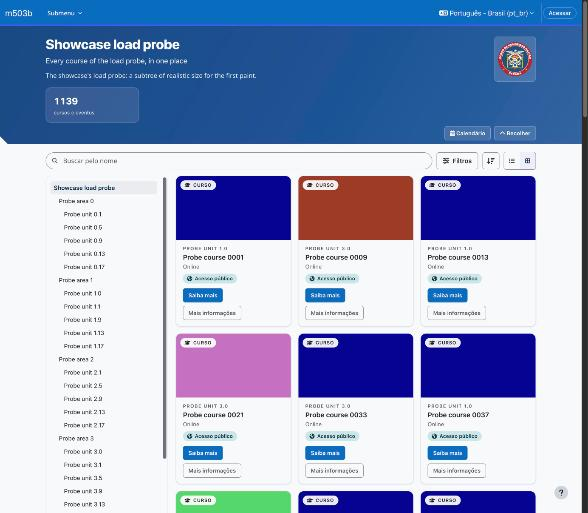
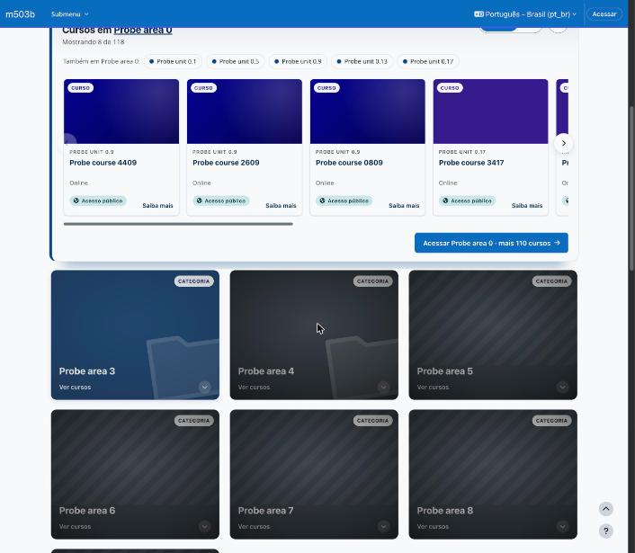
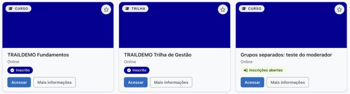
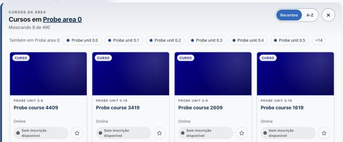
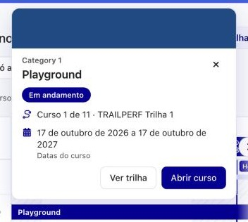
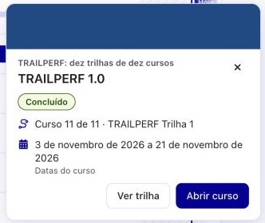
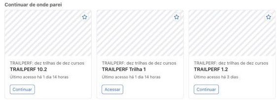
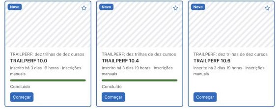
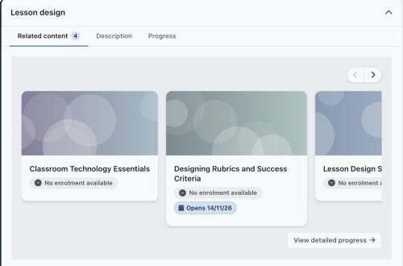

Curso
Todos os cartões de curso que os três plugins desenham hoje no Moodle 5.3, lado a lado, e a proposta de um cartão único com um espaço reservado para o que só cada plugin sabe. Nada no código foi alterado.
main do tema e do local_dimensions, MOODLE_503_STABLE do compass, em 2026-11-08
Capturas reais: m503b (visitante e admin) e m503 (plano, admin)
Visões logadas: reproduzidas a partir dos templates e do SCSS
Botões e cores do tema: medidos no m503b
Rodada 2: estados, tokens e o cartão do plano no local_dimensions
Rodada 3: o popover da trilha no calendário
Rodada 4: barra e imagem pelas configurações do Boost Union; o X do popover
Rodada 5: exibir imagens dos cursos, combinação por combinação
Contrato: moodle-dev/docs/course-card/CONTRACT.md (uaiblaine/moodle-dev#157)
O que explica as diferenças que você viu na vitrine, e o que separa os três plugins.
Lista plana, mini do painel, vista em lista e visitante são o mesmo category_card.mustache. O mini não é outro cartão: o CSS de .dim-panel__rail esconde "Mais informações", troca a capa por 16:9, muda o título para azul em negrito e move a estrela.
--dim-fallback é o #070093 do design system, e não a primária (#0f6cbf) nem a cor da categoria. A cor da categoria só chega ao pôster da área (--dim-card-band). O compass pinta hachuras cinza e o local_dimensions, a primária chapada com as iniciais do curso. Conferido na página: a faixa do mini é o gradiente #070093 → #030050.
Lista plana do tema: só o texto "40% concluído", ao lado da etiqueta. Mini do tema: barra de 4 px e texto. Compass: barra e texto embaixo, verde em 100 %. local_dimensions: barra verde de 8 px com o percentual e um ícone verde em 100 %. Em nenhum dos três o cartão concluído muda de aparência.
"Saiba mais" e "Mais informações" usam o mesmo {{url}}, a landing page. O diálogo não é armado para o visitante, então o segundo botão só repete o primeiro. No mini, "Saiba mais" é o mesmo botão sem a aparência de botão, por isso parece texto.
Os raios são 12 px (tema), 8 px (mini), .375rem (compass, padrão do Bootstrap) e .75rem sem borda (local_dimensions). No hover, o tema e o local_dimensions aumentam a sombra, e o compass não muda nada.
Na captura do compass, dois cursos novos e já concluídos mostram a barra verde e "Concluído" ao lado do botão "Começar": action_text() (classes/local/cards.php) testa "inscrição nova" antes de "concluído", então um curso novo e concluído recebe "Começar". Na vitrine, um curso concluído aparece como "Inscrito", igual a um recém-começado. A proposta tira o rótulo da ação do mesmo estado que pinta o cartão: concluído leva "Rever".
O calendário remapeia btn-primary para o marinho do design system (#070093), com 14 px e raio de 8 px. A vitrine usa o #0f6cbf do Bootstrap, com 13 px e raio de 6 px. O popover da trilha já pinta a capa com a cor da categoria (categoryCover()), a mesma regra que a D3 leva para os outros cartões.
O tipo ("CURSO"), o sobretítulo da categoria e "CURSOS DA ÁREA" estão em versalete com espaçamento largo. O compass já usa sentence case. A proposta tira a caixa alta de todos.
As capturas são do m503b, como visitante e como admin. O admin não tem curso com progresso rastreável nem plano com cursos ligados a competências no m503b, então o progresso na vitrine e os estados de inscrito do carrossel do local_dimensions continuam desenhados a partir do código, com as medidas do CSS. O carrossel sem acesso foi capturado no m503.




templates/category_card.mustache, scss/category.scsshref, a landing page..btn sem borda e sem fundo.js/esm/src/calendar/TrailPopover.tsx, look.ts (categoryCover), scss/calendar.scss

role="dialog" com 360 px, raio de 12 px e sombra grande, ancorado na barra que o abriu; num celular vira uma folha que sobe do rodapé. O foco vai para o título; Esc, o X e um clique fora fecham.categoryCover() lê o par de cores (fundo e texto) da marca da categoria e, sem ele, as cores do estado. É a regra da D3, só que aqui ela já existe. A etapa não traz a imagem do curso, então a faixa nunca tem foto.btn-secondary, branco com borda) e "Abrir curso" (btn-primary), com 14 px e raio de 8 px. O calendário remapeia o primário para o marinho do design system (--dim-ds-interactive-primary, #070093). Na vitrine, o botão primário é o #0f6cbf do Bootstrap, com 13 px e raio de 6 px.js/esm/src/Card.tsx, RowCard.tsx, Row.tsx, styles.css

amd/src/accordion.js (renderCourseCardsScrollable), styles.css
align-items: flex-start na trilha), então o que tem a data fica mais alto que os vizinhos. A proposta iguala a altura numa fileira.course_card.mustache) é outro cenário e fica fora do padrão.Região por região. A última coluna é o que a proposta padroniza; em laranja, onde os plugins divergem hoje.
| Região | Tema · completo | Tema · mini | Compass · destaque e inventário | local_dimensions · plano | Tema · popover da trilha | Proposta |
|---|---|---|---|---|---|---|
| Capa | 150 px | 16:9 | 150 px | 128 px; nenhuma no compacto | 64 px, nunca com imagem | 150 px em todos |
| Sem imagem | azul-marinho #070093 chapado | gradiente marinho | hachura cinza | primária chapada, iniciais | cor da categoria (fundo e texto), senão a do estado | cor da categoria, senão a primária, com gradiente |
| Tipo | "CURSO" em caixa alta | "CURSO", sem ícone | só o selo "Novo" | — | — | "Curso", "Evento", "Trilha", em sentence case |
| Categoria | caixa alta, 11 px | caixa alta | sentence case, 12,8 px, configurável | — | sentence case, 12 px, acima do título | sentence case, 12,5 px, peso 600 |
| Título | 16 px/600; sublinha no hover | 15,5 px/700, azul | 16 px/600; 2 linhas | 15 px/600, 3 linhas; o cartão é o link | 18 px/600, título do diálogo | 16 px/600, 2 linhas; sublinha no hover |
| Linha meta | avaliação · carga · modalidade · cidade | igual | último acesso ou inscrição | — | datas e a origem delas | fatos do curso (avaliação, carga, modalidade) |
| Extra do plugin | "Você também pode se inscrever", "Abre em…" | oculto | último acesso, prazo, "Aberto há…" | selo "Conclui a competência"; gaveta "N atividades" | "Curso 1 de 11 · trilha"; motivo do bloqueio | um espaço próprio, abaixo da linha meta; a gaveta do plano no rodapé |
| Brasões | 80 × 88 (56 × 62 abaixo de 992 px) | 40 × 44 | 56 × 62 | — | — | uma escala só (D2) |
| Estado | pílula, "Inscrito" em marinho sólido | pílula | pílula; "Inscrito" nunca | pílula só sem acesso (11 estados) | pílula sempre, 5 estados da trilha | pílula só quando o estado não é o normal da lista |
| Progresso | texto ao lado da pílula | barra 4 px + texto | barra .4rem + texto | barra 8 px verde + percentual | nenhum | barra de 6 px + percentual, numa linha própria |
| Concluído | nada | nada | barra verde + "Concluído" | barra cheia + ícone verde | pílula verde; capa e ação iguais | a barra sai e entra o selo, com borda verde na capa |
| Favorito | 32 px no topo da capa | 40 px no rodapé | 28 px no topo | — | — | 32 px no topo da capa |
| Ações | CTA + "Mais informações" | nenhuma (visitante: texto) | botão decorativo; cartão é o link | cartão é o link; sem acesso: ação do estado; compacto: "Ir para a atividade" | Ver trilha + Abrir curso; 14 px, raio 8, primário marinho | CTA + "Mais informações"; visitante só "Saiba mais"; o cartão inteiro é clicável (D9) |
| Raio · sombra · hover | 12 px · sombra · sombra maior | 8 px · sombra · nada | .375rem · nada · nada | .75rem sem borda · sombra · sombra maior | 12 px · sombra grande · diálogo, sem hover | por tokens: 12 px · sombra · sombra maior |
A mesma anatomia nos três plugins. Cada um preenche os mesmos espaços com os próprios dados e usa um espaço reservado para o que só ele sabe.
course_badges)."Saiba mais" leva à landing page. "Mais informações" não é desenhado, porque o diálogo não existe para o visitante. Um curso sem landing não tem botão.
O mini sai: dentro do painel, o cartão fica igual ao da lista plana, com "Acessar" e "Mais informações". O trilho continua rolando na horizontal; cada cartão fica com a largura de uma coluna da grade.
Em 100 % a barra some. Entram o selo verde "Concluído" na linha de estado e uma borda verde de 4 px na base da capa. A ação passa a "Rever".
Raio de 12 px, sombra pequena em repouso e maior no hover e no foco, sem movimento. Foco: o anel de 3 px #4456FF com 2 px de afastamento, a regra do design system do tema. O compass ganha a sombra e o local_dimensions troca o .75rem sem borda pelo cartão padrão. Todos esses valores são tokens (seção Tokens). Numa fileira ou num carrossel, os cartões têm a mesma altura e as ações se alinham na base.
Sem link esticado nem hover de cartão: o diálogo já foi aberto, as ações são explícitas e ficam alinhadas à direita. O título é o cabeçalho do diálogo (18 px, recebe o foco ao abrir). O X fica onde a estrela ficaria, no canto da capa: o disco escuro do diálogo "Mais informações" (fundo preto a 50 %, contorno branco a 40 %, X branco), reduzido de 44 para 32 px. Largura de 360 px; num celular, a folha que sobe do rodapé continua.
Quando o tema ativo é o Boost Union ou um filho dele, como o Dimensions ($THEME->parents contém boost_union). Vale para os quatro lugares: vitrine, popover da trilha, compass e cartão do plano. Com outro tema, cada plugin segue a própria regra.
courseoverviewshowcourseprogressSim ou não, padrão sim. O Boost Union aplica a regra só no bloco Visão geral do curso, escondendo .progress-text por SCSS. No padrão, cada plugin lê a configuração no servidor e não desenha a barra nem o percentual quando ela está desligada; não é só esconder com CSS.
courseoverviewimagesource"Imagem do curso, senão padrão geométrico" (padrão) ou "Imagem do curso, senão a imagem de fallback" (courseoverviewimagefallback). O Boost Union decide em get_generated_image_for_id() do renderer, que o core chama quando o curso não tem imagem. O padrão pede ao renderer do tema ativo a imagem do curso sem foto, e assim herda a escolha do administrador.
get_generated_image_for_id() como o Boost Union já faz (D14).courseoverviewshowcourseimagesCartão, Lista e Resumo, as três marcadas por padrão (o m503b está assim). O Boost Union aplica cada uma a uma vista do bloco Visão geral do curso. No padrão, a mesma caixa vale para a vista equivalente de cada plugin.
A grade da vitrine, o painel do modo agrupado, os cartões do compass (destaque e inventário), o carrossel do plano e o popover da trilha. Desmarcada, o cartão perde a capa: a pílula do tipo, os brasões e a estrela sobem para uma linha no topo do corpo, e uma borda de 4 px na cor da categoria mantém a identidade. Concluído, a borda fica verde.
Lista vale para a vista em lista da vitrine e do compass (a linha de 56 px da D8): desmarcada, a linha perde a miniatura e ganha uma borda de 4 px à esquerda, na cor da categoria. Resumo não muda nada: nenhum dos quatro lugares tem a vista resumo do bloco.
As três marcadas, o padrão do Boost Union: cartões com capa e linhas com miniatura.
Vista em lista: vitrine e compass
Resumo marcado ou desmarcado repete estas quatro: nenhum dos nossos cartões é a vista resumo. Sem a capa, o popover da trilha troca o disco escuro pelo botão de ícone do padrão no canto do corpo, porque o disco foi feito para ficar sobre uma imagem.
Como o cartão e cada botão respondem ao mouse, ao teclado e ao toque. Os valores dos botões foram medidos na vitrine do m503b com o tema Dimensions; os botões são as variantes do Bootstrap, então seguem o tema sem regra própria.
Estes cartões respondem de verdade: passe o mouse, clique na gaveta e use Tab para ver o foco.
btn btn-primary btn-smbtn btn-outline-secondary btn-smbtn btn-outline-primary btn-smO link do título se estica sobre o cartão (::after com inset: 0), como o compass já faz pela ADR-013 e o plano faz com o cartão inteiro como link. Os botões, a estrela e a gaveta ficam por cima e têm hover próprio. Assim o cartão inteiro reage, e o leitor de tela ouve um link só, com o nome do curso (D9).
Só a sombra e o sublinhado do título mudam, em 150 ms. Sem subir, sem zoom na capa: no carrossel e no painel, mexer no tamanho ou na posição corta a sombra e empurra os vizinhos. Com prefers-reduced-motion, a troca é instantânea.
O anel vem de um token: #4456ff com 3 px sob o Dimensions; fora dele, a cor de ênfase do Bootstrap com 2 px, a regra que o local_dimensions já segue. Nunca só uma sombra, nunca na cor da marca.
btn-primary, btn-outline-secondary e btn-outline-primary, tamanho btn-sm. Hover, pressionado e desabilitado vêm das variáveis --bs-btn-* do tema. "Mais informações" troca o estilo próprio da vitrine (dim-card__summary) pela variante do Bootstrap (D10).
Nada depende do hover: a estrela e a ação do plugin ficam sempre visíveis, e todo alvo tem pelo menos 32 px. No toque, o estado pressionado é o único retorno.
Enquanto grava, a estrela fica em .6 e não aceita outro clique. Um botão que dispara uma ação demorada, como inscrever-se, mostra o giro e fica desabilitado até a resposta.
Todo valor visual do cartão sai de uma propriedade CSS com nome fixo. Um tema muda o cartão nos três plugins declarando esses nomes, sem tocar em seletor nenhum. É o mesmo modelo dos tokens da família que o local_dimensions e o block_dimensions já leem (docs/tokens.md do tema).
--dimensions-card-* em :root, body e .modal, claro e escuro. Só o tema declara esse prefixo.--block_compass-card-*, --local-dimensions-card-*, --dim-card-*), cada um lendo o token da família primeiro.--bs-*) e termina num valor literal. Em Boost ou Boost Union, o cartão segue a primária e as cores do tema ativo.--…-card-band na capa, já sanitizada, como hoje faz com as cores do admin./* block_compass, styles.css: um token de exemplo, com a cadeia completa. */ .block_compass .compass-card { --block_compass-card-radius: var(--dimensions-card-radius, 12px); --block_compass-card-cover-fallback: var(--dimensions-card-cover-fallback, var(--bs-primary, #0f6cbf)); --block_compass-card-focus-ring: var(--dimensions-card-focus-ring, var(--dimensions-focus-ring, var(--bs-emphasis-color, #000))); } /* theme_dimensions, scss/post.scss: o tema muda o cartão nos três plugins de uma vez. */ :root, body, .modal { --dimensions-card-shadow: 0 1px 2px rgb(7 0 147 / 8%), 0 1px 3px rgb(7 0 147 / 6%); --dimensions-card-focus-width: 3px; }
Token (sufixo de --dimensions-card-) | O que pinta | Sem o tema | Sob o Dimensions hoje |
|---|---|---|---|
| Forma | |||
radius | raio do cartão | 12 px | 12 px |
border-width, border | contorno | 1 px, --bs-border-color | 1 px #dee2e6 |
cover-height | altura da capa | 150 px | 150 px |
track-height | espessura da barra | 6 px | 6 px |
done-edge | borda verde da capa concluída | 4 px | 4 px |
| Cor | |||
surface, ink, ink-muted | fundo, título, linhas secundárias | --bs-body-bg, --bs-body-color, --bs-secondary-color | tokens da família surface, ink, ink-muted |
title-hover | título no hover | --bs-link-hover-color | #0c5699 |
cover-fallback | capa sem imagem e sem cor de categoria | --bs-primary | #0f6cbf (sai o #070093) |
cover-overlay | gradiente sobre a cor da capa | branco 16 % → preto 34 % | igual |
chip-bg, chip-ink | pílula do tipo sobre a capa | branco 92 %, #1f1f1f | igual |
extra-bg, extra-icon | espaço do plugin, gaveta | --bs-tertiary-bg, --bs-primary-text-emphasis | #f8f9fa, #062b4c |
track, fill | barra de progresso | --bs-secondary-bg, --bs-primary | #e9ecef, #0f6cbf |
done, done-bg, done-ink | borda e selo de concluído | --bs-success, --bs-success-bg-subtle, --bs-success-text-emphasis | #357a32, #d7e4d6, #153114 |
| pílulas de estado | Inscrito, Inscrições abertas, Em breve… | reaproveitam os tokens de estado que já estão no contrato da família (--dimensions-state-*-bg e -ink, seis famílias) | |
| Profundidade, foco e tempo | |||
shadow, shadow-hover | repouso e hover | sombras neutras de 1 e 6 px | tingidas de marinho (medido: rgba(7, 0, 147, .08)) |
focus-ring, focus-width | anel do cartão e dos botões | --bs-emphasis-color, 2 px | --dimensions-focus-ring #4456ff, 3 px |
close-bg, close-bg-hover, close-edge | X sobre a capa (popover) | preto 50 % / 70 %, branco 40 % | igual ao diálogo "Mais informações" |
locked-opacity | capa de um cartão sem acesso | .62, com 55 % de cinza | igual |
transition | duração do hover | 150 ms | 150 ms |
Os valores medidos no m503b: foco #4456ff de 3 px.
Cada botão troca só propriedades no contêiner; o HTML e o CSS dos cartões são os mesmos nos quatro. Use Tab sobre os cartões para comparar o foco.
Os três plugins vão para o diretório do Moodle e precisam funcionar com qualquer tema. O compass desenha em React, a vitrine em Mustache com React, e o local_dimensions em Mustache com AMD. Nenhum deles pode depender do outro para desenhar um cartão.
Os pedidos desta rodada, e onde cada um entra.
.dim-panel__rail .dim-card saem. O diálogo já é armado para quem está logado.category_panel_eyebrow sai do template e das duas línguas.--dimensions-card-* com as cadeias sem o tema, e o mesmo cartão sob quatro temas.courseoverviewshowcourseimagesPrévia ao vivo com as três caixas, e as quatro combinações de Cartão e Lista lado a lado. D11 a D15 aceitas.courseoverviewshowcourseprogress e courseoverviewimagesource valem para todo cartão quando o Boost Union ou o Dimensions é o tema ativo, inclusive no compass e no local_dimensions (D13 a D15).finder.php) e não fixa markup, CSS nem estados de cartão antes do contrato; registrou a dependência no docs/related/PLAN.md.accordion.js).As quinze foram aceitas como recomendadas, com o ajuste da D6. D11 e D12 vêm do popover da trilha; D13 a D15, das configurações do Boost Union.
Template do tema, um contrato com três implementações, ou um plugin novo.
Aceita: o contrato com três implementações e um teste de varredura em cada plugin.
O tema usa 80 × 88 desde a rodada E1 por decisão sua; o compass usa 56 × 62. Numa capa de 150 px, três brasões de 80 px cobrem metade da largura do cartão.
Aceita: 56 × 62 em todos, e 80 × 88 só no herói e no diálogo.
Um curso fica numa subcategoria que pode não ter cor, embaixo de uma área que tem.
Aceita: a categoria mais próxima no caminho que tiver cor; sem nenhuma, a primária do tema.
Opção A: selo e borda verde. Opção B: faixa na capa.
Aceita: a opção A.
A ADR-013 decidiu que o cartão inteiro é o link e o botão é só decorativo. O padrão dá ao compass a mesma ação que a vitrine tem, como um link de verdade.
Aceita: manter o cartão como link e tornar o botão real só no compass destaque, sem "Mais informações", porque o compass não tem o diálogo.
O cartão certo do local_dimensions é o do plano, que mostra as atividades ligadas à competência numa gaveta "N atividades", não uma trilha de seções.
Aceita, com ajuste: a gaveta fica recolhida no rodapé do cartão, fora do link, e o espaço do plugin leva só o resultado, sem o resumo "3 de 5 seções".
A regra é mostrar o estado só quando ele foge do normal da lista. Isso mantém "Inscrito" na vitrine e tira de onde todo curso já é inscrito.
Aceita: a regra como está.
Hoje o tema tem o título e os botões como links; o compass e o plano fazem do cartão inteiro o link. O link esticado do título resolve as três formas com um só alvo e um só hover.
Aceita: o link esticado nos três, com botões, estrela e gaveta por cima. Cartão sem acesso não tem link.
A vitrine usa um estilo próprio (dim-card__summary), um contorno cinza que não muda de cor no hover. btn-outline-secondary preenche de cinza no hover e segue qualquer tema.
Aceita: a variante do Bootstrap nos três plugins.
A etapa que o serviço das trilhas devolve (TrailStep) não tem imagem do curso nem percentual; tem o estado e a data de conclusão. Sem esses dois campos, o popover fica sem foto e sem barra.
Aceita: acrescentar a imagem do curso à etapa, e o percentual só se local\trail\progress já o calcula sem consulta nova; senão, o popover mostra só o estado.
O popover vive no calendário, que desenha todos os seus botões com o primário marinho, 14 px e raio de 8 px. O cartão padrão usa btn-sm e o primário do Bootstrap.
Aceita: que o popover siga o calendário nos botões, para não destoar de "Hoje" e das setas ao redor, e siga o cartão em todo o resto. Os rótulos seguem o padrão: "Continuar" ou "Rever" conforme o estado, e "Ver trilha" no contorno cinza.
courseoverviewshowcourseprogress tira a barra e o percentual. O selo "Concluído" e a borda verde dizem o estado do curso, não o quanto falta.
Aceita: manter o selo e a borda com o progresso desligado, e esconder só a barra e o número.
No Boost Union, a opção padrão mostra o padrão geométrico do core no curso sem foto. A D3 decidiu a cor da categoria para o Dimensions. As duas regras se cruzam.
Aceita: a imagem de fallback vence sempre que for a escolha do administrador e houver imagem enviada. Com a opção do padrão geométrico, o Boost Union mostra o padrão do core e o Dimensions mostra a capa na cor da categoria, sobrescrevendo get_generated_image_for_id() como o Boost Union já faz. Os plugins só pedem a imagem ao renderer.
courseoverviewshowcourseimages?O Boost Union tem uma terceira opção vizinha: mostrar ou não a imagem nas vistas cartão, lista e resumo do bloco Visão geral do curso. Ela não estava no seu pedido.
Aceita: seguir também: com "cartão" desmarcado, o cartão fica sem capa (a estrela e a pílula do tipo passam para o corpo); com "lista" desmarcada, a linha da D8 fica sem miniatura.
O tema e o compass têm uma linha de 56 px parecida, mas diferente em detalhes.
Aceita: incluir a linha no mesmo contrato, depois dos cartões.
moodle-dev/docs/ com a anatomia, os estados, os tokens e as regras do Boost Union (como detectar o tema e ler as duas configurações), mais o teste de varredura modelo; os nomes --dimensions-card-* entram em docs/tokens.md do tema. Só documentação e um teste.accordion.js) adota o padrão; o selo de resultado vai para o espaço do plugin e a gaveta fica no rodapé. No main e nos branches de versão que você escolher.